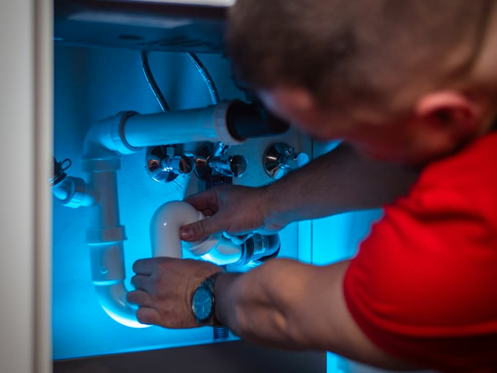

01
Dépannage & urgence
Une fuite d'eau, une canalisation bouchée ou des WC qui ne fonctionnent plus ? J'interviens rapidement, 7j/7, à Lamballe et dans toutes les Côtes-d'Armor pour trouver la panne et la réparer durablement.
- Intervention rapide 7j/7
- Diagnostic sur place
- Réparation immédiate quand c'est possible
- Tarif annoncé avant toute intervention
